Sarah Abbott's research aims to understand and share knowledge of the sentient, sensory relations of trees, plants and nonhumans in general though frameworks that include public/multispecies ethnography, Indigenous ways of knowing, ontological emergence theory, plant science, interspecies communication, and ethnographic filmmaking. Sarah is an associate professor based in the Department of Film at the University of Regina and teaches in the areas of film production, sentient ecologies, ethnographic practice, and climate change. She recently completed her interdisciplinary Doctorate of Social Sciences at Royal Roads University. She received her Master of Fine Arts in Media Arts from Syracuse University and her Bachelor of Arts Honours in Film Studies and Drama from Queen's University. Sarah is a recipient of a Vanier Canada Graduate Scholarship (2014-2017), the Saskatchewan Lieutenant Governor's Arts Award for Arts and Learning (2012), and the City of Regina's Mayor's Arts and Business Award for Innovation in the Arts (2009).
MONAHAN is situated on the traditional unceded territory of the Anishinabe Algonquin Nation, custodians of these lands for millennia.
ART PUBLIC ART
MONAHAN est situé sur le territoire traditionnel non cédé de la Nation Anishinabe Algonquine, gardienne de ces terres depuis des millénaires.

A Sound Piece for Curious Ears
Track name:
Url:
Track duration (seconds):
Playlist duration (minutes):
Current Index:
Tags for current track:
Credits:
Credits (to be played at the end):
Full TrackList:
Log:
ABOUT
MONAHAN
A sound piece for curious ears.
Experience the site anew with each visit through dozens of sounds and stories gathered for the Monahan wetlands.
Delve into sounds that explore movement, migration, story as medicine, non-human beings, plants as healers, voice, translation, and place.
HOW TO LISTEN
- Scan the QR code
- Arrive at the MONAHAN website
- Put on your HEADPHONES
- Click BEGIN
- LISTEN to a personalized sound piece
You can listen to MONAHAN wherever you are. We suggest spending time outside while listening.
HOW IT WORKS
Each time you click BEGIN, you’ll hear a unique sound piece, collaged by our algorithm from 173 sound chapters. All these chapters are created by a diverse group of contributors. You’ll hear everything from songs and poems to nature sounds, interviews and stories.

By bringing together sounds by human and non-human beings MONAHAN creates an ever-evolving experience. You may hear a chapter you’ve heard before, but this time it’s next to something new. Like the landscape around you, MONAHAN is always changing.
WHERE TO FIND US
Visit the Monahan Wetlands (or Monahan Drain) in Ottawa, Canada.
ACCESSIBILITY
- The paths around the site are paved, and accessible, and include benches.
- With a smartphone and data access you can scan a QR code to experience the sound piece.
- QR codes are on the main sign located near the bridge and on a selection of benches along the main path.
- The QR codes on the benches are installed on the backrests.
- There are no washrooms on site.
CONTRIBUTORS
SARAH ABBOTT
DIANA BERESFORD-KROEGER
Botanist, medical biochemist and author Diana Beresford-Kroeger possesses a unique combination of western scientific training and an understanding of the knowledge and methods of a wide variety of traditional and alternative sources. Beresford-Kroeger's concept of bioplanning challenges ordinary people to develop a new relationship with the natural world, to view the environment as a biological system and to perform the ecological task of replanting the global forest. Her books include The Sweetness of a Simple Life, The Global Forest, Arboretum Borealis: A Lifeline of the Planet, Arboretum America: A Philosophy of the Forest, and A Garden for Life. A feature documentary about her work, the Canadian Screen Awards-nominated Call of the Forest: The Forgotten Wisdom of Trees, appeared in 2017. Her latest book is To Speak for the Trees: My Life's Journey From Ancient Celtic Wisdom To a Healing Vision of the Forest.
PIERRE-LUC CLÉMENT
Pierre-Luc Clément is a self-taught multi-disciplinary artist, sound designer, composer and producer who is actively involved in the artistic community in Ottawa/Gatineau. Founding member of the groups FET.NAT, KAY-fayb, Or and others, he also works as a percussionist and composer for renowned artists and contemporary dance and theatre companies across Canada. He has been listed on the prestigious Polaris short list for the album Le mal in 2019, and nominated at l'ADISQ for the producing of Message texte à Nelligan in 2016. He also co-fabricated three children. Prizes include SAW Gallery's New work prize in 2020 and two Rideau Prizes for best theatre sound design in 2014 and 2019. Pierre-Luc's work is characterized by the always tentative implementation of innovative concepts, approaches and methods. His creations are often intense and polarizing, oscillating between the beautiful and the abject while incorporating possibilities for failure.
ALBERT DUMONT
Albert Dumont is an Algonquin spiritual advisor, poet, and storyteller from Kitigan Zibi Anishinabeg. His artistic talents touch many areas of the arts community. He was the English Poet Laureate for Ottawa from April 2021 to April 2023. He is also a pen & ink artist, actor, and playwright. Albert has performed his play Bloodline several times and has acted in fire prevention videos, TV commercials, and plays. Albert has written six books of poetry and short stories, and two children's books. He is the founder of Turtle Moons Contemplations, featuring his artwork and poems. Albert was presented with a Human Rights Award by the Public Service Alliance of Canada in 2010. In January 2017 he received the DreamKEEPERS Citation for Outstanding Leadership. Albert has dedicated his life to promoting Aboriginal spirituality and healing and to protecting the rights of Aboriginal Peoples particularly those of the young. He is the father of three daughters, grandfather of five grandchildren and has one great-grandchild.
LANG ELLIOTT
Lang Elliott is a well-known nature recordist currently specializing in spacious 3D-binaural soundscapes gathered in wild areas across North America. To learn more about his work visit Music of Nature. Many of Lang's best and most immersive soundscapes are featured in his popular mobile application Pure Nature 3D Soundscapes, which effortlessly transports the listener into the wilds, each recording accompanied by an informative essay describing the habitat and what is heard. Lang is also the co-developer of Hear Birds Again, a unique new mobile app aimed at birders suffering from high frequency hearing loss. The app works by lowering the pitch of high bird songs to bring them into a frequency range where they can once again be heard.
SAM ESSER
As a Storm Water Field Technician for the City of Ottawa's Stormwater Management Branch, Sam Esser is part of a team dedicated to the revitalization of the Monahan wetlands. This work has seen a significant increase of wetland habitat through the propagation and protection of key aquatic plant species. In addition to providing critical habitat for birds, reptiles, and fish, these plants clean the water through the absorption and uptake of pollutants from upstream urban stormwater runoff. Sam's work extends throughout the city where he assesses the function of different stormwater facilities relative to water quality and quantity objectives. Before working for the City, he earned a Master's of Science at McGill University. He has had various environmental roles in the private and public sector and even worked aboard commercial fishing vessels in the Bering Sea. When he's not at work, you'll find him paddleboarding and fishing up and down the Rideau River.
CHARLOTTE FRANK
Charlotte Frank is a singer and songwriter trained in bel canto, choral music, and creative writing. She has collaborated with multiple artists, writing, recording, and performing music in Ottawa, Berlin, and Montreal since 2015. She currently lives in Montreal where she is recording music as a member of the bands Misty Mood and Ezme, both of which released debut EPs in 2022 and 2023. Currently pursuing her PhD in English Literature at McGill University, Charlotte recently published a chapbook with fellow poets through Collusion Books entitled Terrifying Friends. She has degrees in the humanities and creative writing from Carleton University and Concordia University respectively.
KIM KILPATRICK
Kim Kilpatrick is a professional storyteller, music therapist, accessibility consultant, and lover of nature. She has three one woman shows about living as a blind person in a sighted world: Flying in the Dark (2011), Raising Stanley/Life with Tulia (2018) and Dangerous Touch (living through COVID when blind 2022). Kim is a featured artist with Ottawa Storytellers, MASC and radical connections. She shares her travels with her fifth guide dog Ginger, who is a yellow lab and who walked the nature paths with her for this project.
FIDES KRUCKER
Fides Krucker has sung, produced and created contemporary opera and interdisciplinary work in Canada and abroad for forty years. Her book Reclaiming Calliope: Freeing the Female Voice through Undomesticated Singing (North Atlantic Books) re-wilds the human voice through body-based emotional integration. In 1991 Fides founded the interdisciplinary performance ensemble URGE; their final work received two Dora awards and was published by Playwrights Canada. In 2018 her company, Good Hair Day Productions --- known for groundbreaking lyric-theatre --- presented In This Body at Canadian Stage with dancers Heidi Strauss, Laurence Lemieux and Peggy Baker. Her own voice is noted for its "staggering range and control ... less an instrument than a force of nature." Fides taught voice at Humber College for twenty years and facilitates a wide range of artists in Canada and the US. Her 2-year teacher training programme launched in the summer of 2021.
AMY MACPHERSON
Amy MacPherson is an environmental biologist working in the Natural Systems & Rural Affairs unit at the City of Ottawa. In addition to working on subwatershed studies, environmental assessments and other planning initiatives, Amy organises the City's Wildlife Speaker Series events. She also developed and maintains lists of several types of wildlife found in the city, including a list of Species at Risk in Ottawa. Other recent projects include the development of Bird-Safe Design Guidelines and the City Hall Pollinator Garden. Prior to joining the City in January 2006, Amy worked for seven years as an environmental consultant. In her spare time, Amy enjoys nature photography and has lately been putting this hobby to good use by contributing observations to iNaturalist.
KIKO PACE
Kiko Pace creates portals for deeper listening through installation, sound making, meditation and restorative practices. They currently facilitate private and group sound bath experiences at their studio Kiko Space in Roncesvalles, Tkaronto, and offer retreats, workshops and trainings that further explore the art and science of sound. Kiko is deeply devoted to communicating, learning and honouring nature through personal ritual and study. All begins with acknowledging the privilege of getting to practice on this land, the necessity of care, and the responsibility we have to ourselves, the earth and each other.
DEMETRIOS PETSALAKIS
Originally from Athens Greece, Demetri Petsalakis is a Toronto based musician performing in a variety of styles with a focus on Greek and Middle Eastern lutes. Influenced by the rich cultural diversity of Canada, Demetri incorporates musical elements from different traditions in order to create a contemporary sound that represents both his heritage and the community that he is a part of. An active member of the Toronto world music scene Demetri has composed for, recorded, and performed with many groups including Kune, Niyaz, Tafelmusik, Ventanas, Near East Trio, Zephyr, Turkwaz, Moneka Arabic Jazz and Moskitto Bar. During his musical studies Demetri has been fortunate to learn from many great teachers including oud masters Bassam Bishara, and Christos Tsiamoulis as well as master of the Cretan Lyra Astrinos Zaharioudakis and renowned jazz guitarist Lorne Lofsky.
NAMITHA RATHINAPPILLAI
Namitha Rathinappillai is a fat, disabled, queer, Tamil-Canadian spoken word poet, organizer, and workshop facilitator who entered the poetry community in 2017. She is currently based in Toronto, and was the first female and youngest director of Ottawa's Urban Legends Poetry Collective (ULPC). They are a two-time Canadian Festival of Spoken Word (CFSW) team member with ULPC, and they published their first chapbook titled Dirty Laundry with Battleaxe Press in November of 2018. In 2019, she won the RBC Youth Ottawa Spirit of the Capital Award for Arts and Culture. They enjoy crafting, writing letters to friends, and looking at the moon.
PATRICIA REYNOLDS
A teacher by profession, Patricia Reynolds has been involved in Indigenous Education for over 30 years. She drums with the No Borders Drum Circle and on occasion joins the Thunderbird Sisters Collective for drumming and other performances. Now retired, she sings with Just Voices: An Activist Choir, the No Borders Community Voices, and also performs with Carmel Whittle. She recently participated in Beverley and Melody McKiver's Odaabaanag as organizer, accompanist, and member of the No Borders Community Voices. Patricia is currently working with Unmasked Connections, a project that brings the arts to residents in long-term care.
JESSE STEWART
Jesse Stewart is a composer, percussionist, artist, and educator. His music has been documented on over twenty recordings including Stretch Orchestra's self-titled debut album, which was honoured with the 2012 Instrumental Album of the Year Juno award. He has been widely commissioned as a composer and artist. In 2012, he founded We Are All Musicians (WAAM), an organization dedicated to making music as broadly accessible as possible. Through the WAAM initiative, he has conducted hundreds of inclusive music workshops and performances throughout North America. He has received numerous awards and honours including the Ottawa Arts Council's Mid-Career Artist Award (2017) and the Ottawa Arts Council Community Arts Educator Award (2023). In 2014, he was named to the Order of Ottawa. In 2022, he was elected to the College of New Scholars of the Royal Society of Canada. He is a faculty member in Carleton University's School for Studies in Art and Culture.
LOUELLA TOBIAS
Louella Tobias is Delaware Anishnabe Kwe from Moravian of the Thames First Nation. "My name is Phoenix Thunderbird, I am inevitable, the devoted one from the Golden Eagle clan. My English name is Louella." A mother of three, grandmother of seven and great grandmother of one, Louella has been following her traditions for more than half of her life. She belongs to the Midewin Lodge on Manitoulin Island and is 3rd. Degree Midewin. Louella holds a Bachelor of Social Work from Laurentian University and learned about traditional healing and medicines such as sweat lodges, cedar baths and pipe ceremonies from Grandmothers in Sudbury.
ELLEN WATERMAN
Ellen Waterman is Professor in the School for Studies in Art and Culture and holds the Helmut Kallmann Chair for Music in Canada at Carleton University. She is both a music scholar and a flutist specializing in creative improvisation. Her work on acoustic ecology includes the books Sonic Geography Imagined and Remembered, and The Art of Immersive Soundscapes. With Gillian Siddall, she is co-editor of Negotiated Moments: Improvisation, Sound, and Subjectivity, and she was a founding co-editor of the journal Critical Studies in Improvisation/Etudes critiques en improvisation. In 2021 she founded the Research Centre for Music, Sound, and Society in Canada, dedicated to exploring the complex and diverse roles that music and sonic arts play in shaping Canadian society.
WARY WELSH
Wray Welsh is a dedicated and experienced Zone Supervisor for West Parks in Ottawa. Going straight from the school yard to the city yard in 1983, Wray has spent the past 40 plus years maintaining facilities and the beautiful outdoor spaces of the City of Ottawa. Wray oversees all the park infrastructure ensuring their cleanliness, safety, and overall functionality. Whether it's managing day-to-day park operations, motivating a team of staff, implementing conservation initiatives, or fostering community engagement, Wray's dedication and expertise make him an exceptional Zone Supervisor. His tireless efforts contribute to the well-being of both the parks and the communities they serve, ensuring that everyone can enjoy nature's beauty and tranquillity. In his free time, Wray enjoys boating along serene waterways, embarking on thrilling motorcycle adventures, and exploring the wonders of the underwater world through scuba diving.
JAYNE YACK
Professor of biology Jayne Yack is fascinated with the unique sensory 'worlds' of animals, and in particular, how insects use sounds and vibrations beyond the sensory capabilities of humans to survive. Jayne completed her PhD at the University of Toronto and a postdoctoral fellow at Cornell University. She currently runs an active research lab at Carleton University in Ottawa, where she and her students use specialized instruments to make neat discoveries, such as how butterflies use ears on their wings to detect predators, and how caterpillars communicate using leaf vibrations to form social groups, or to perform 'rap battles' to win territories.
SUTURE PARALLÈLES
Sutures parallèles is an uneasy chorus of earthly fabulations, gulch dirges and strained lullabies. Conceived by Marc A. Reinhardt, collectively composed and performed by Eugénie Jobin, Marc A. Reinhardt and Frédérique Roy.
MARC A. REINHARDT
Marc A. Reinhardt is a comparatist working at the intersection of sound, text, performance and installation. His practice develops compositional processes that investigate issues of transduction, historicity and collective agency. He is interested in how we inhabit the contradictions, in language and beyond, that emerge from these investigations. His work has been presented in Canada, Europe and South America.
FRÉDÉRIQUE ROY
Frédérique Roy is a musician, composer and writer. The debut album of her ensemble Lune très belle was released by Wild Silence (France), and her first collection of poems was published by l'Oie de Cravan (Montréal). Her second album, Ovale, came out on Boiled Records (Toronto) in 2023. She works as a composer and performer for choreographers Catherine Lavoie-Marcus and Erin Hill. As a musician, she collaborates in different projects: with Philippe Lauzier; House of Gold; the Air Contains Honey Orchestra amongst others. She has presented work in México, Toronto, Montréal (OFFTA, Dazibao, Suoni per Il Popolo, Pop Montréal.) Frédérique is also involved in concert programming, zine publishing, feminist collective mobilization, and vocal and somatic workshopping. She works in psycho-social accompaniment for Club Ami, a day center offering alternative resources to psychiatrized people. She lives and works in Montréal.
EUGÉNIE JOBIN
Eugénie Jobin is a musician, composer and director. She lives and works in Tio'tià:ke (Montréal). Her band Ambroise released its first album, À la tonalité préférable du ciel, in November 2018 under the French label Wild Silence. The album is inspired by the poems of Quebec author Paul-Marie Lapointe. Eugénie just launched her second album, Bienvenue, a collection of eight pieces based on the poems of Quebec author Geneviève Desrosiers. In addition to composing her own songs, Eugénie works on music for dance, theatre and film. She has presented her work in Montréal, Toronto and Mexico City.
THE THUNDERBIRD SISTERS COLLECTIVE
The Thunderbird Sisters Collective was founded in 2017 by Metis artist, Patsea Griffin, following workshops where she would see some of her friends create the most fabulous beadwork as well as other traditional and non-traditional artwork then tuck it away in a drawer, tin container, or ziplock bag as was the case with her beadwork. Sometimes never to be seen again. "I decided that I wanted to show my work that took hours to create and then I thought why not help others as well. There are so many talented people in the community that never get to show their work. And it's amazing work." In 2021 The Thunderbird Sisters Collective became a not-for-profit organization whose goal is to create youth-led safe spaces where it will be demonstrated that learning Indigenous knowledge is marketable and transferrable to life experience, the workplace and the community. We're going to dream out loud.
PATSEA GRIFFIN
Born and raised on her ancestral land along the Kichi Sibi (Ottawa River), on unceded and unsurrendered Algonquin territory, Patsea Griffin is a mix-blood, a special blend of many bloodlines including Ontario Métis - a proud Citizen of the Métis Nation of Ontario. Patsea is an Artist. Dreamer. Beadworker. Published poet. Quilt maker. Drummer. Singer. Knowledge seeker. Community supporter. Roadkill adventurer (always looking to harvest porcupine quills). "My art is my way of staying connected to all my relations in the spirit world." Patsea also loves to perform, sing, write, laugh and lives life to the fullest!
THÉO PARADIS
Théo Paradis is Indigenous, she grew up in Cornwall and currently lives on the unceded territory of the Algonquin Anishnaabe Nation in Ottawa. Her family came from along the Ottawa and St. Lawrence Rivers in the territory of the Algonquin and Kanien'kehá:ka ("People of the Flint"). She is Agokwe nini (2 Spirit) and Oshakbaywis (traditional helper) with elders and knowledge keepers in the community. She is of the bear clan and parent to two amazing young men. In Théo's role as a traditional helper of ceremony, drumming and singing provides her with a deep rooted connection of traditional and indigenous way of life.
BARMEL WHITTLE
Carmel Whittle identifies as a 2SL/ Mi'kmaw/Irish cultural community artist, activist, independent filmmaker, and musician/songwriter. In the practice of decolonized community arts she develops, directs and curates the No Borders Art Festival and is program coordinator for the Thunderbird Sisters Collective. Her documentary films include There Is No Word, for Greenpeace Canada; Bringing The Land To The City, a film residency with Digital Art Resource Centre; and One Contrary 5 Agokwe Nini, featuring members of the 2SLGBTQ community and collaborative co-creating of Podcast #83. Her visual art is currently exhibited with Artvocate, UK. Soloist for Odaabaanag project. Carmel's influences come from nature and culture with roots deeply connected to the ocean and to the community. She is also an independent art educator, mentor, workshop leader and consultant with diverse artistic communities.
TURKWAZ
Turkwaz is Jayne Brown, Sophia Grigoriadis, Brenna MacCrimmon, and Maryem Tollar; four vocalists who individually have contributed widely to the Toronto world music scene and beyond. Their work together focuses on interpretations of songs primarily from Greek, Turkish, Arabic and Balkan traditions with forays into other genres when the inspiration moves them. Qanun, tambura, ukulele and various forms of hand percussion provide gentle accompaniment to their arrangements, allowing their voices to remain front and centre. They love singing in pure traditional styles but are also equally comfortable adding harmonies where no harmonies existed before. They are all highly adaptable musicians and enjoy collaborating across genres. Their debut album "Nazar" garnered both Juno and CFMA nominations on its release.
JAYNE BROWN
Since making the switch from classical to folkloric singing, Jayne Brown has been learning, performing, travelling and recording with several ensembles, including Latin American ensembles, Nazka and Ilédé, Macedonian band Staro Selo, and Mediterranean mash-up bands Maza Mezé and the Maryem Tollar ensemble. For the past two decades, Jayne has been concentrating her efforts on Greek folkloric song, studying in both Greece and Toronto. Jayne balances her time between music and her psychotherapy practice.
SOPHIA GRIGORIADIS
Sophia Grigoriadis is a musician and teacher. Over the past 30 years her study of Greek, Balkan and Middle Eastern singing and percussion has led her to compose, perform and tour with many Toronto world and fusion ensembles. Her love of teaching and sharing her musical passion extends to all ages: as Choir Director of All Saints Greek Orthodox Church and City Choir in Toronto, as Music teacher from Preschool to Grade 8 at Metamorphosis Greek Orthodox School, and to young children through her Clapping Land music studio, where her compilation world music CD Sound Adventures --- Global Music for Children garnered the Parent's Choice Foundation Silver Award.
BRENNA MACCRIMMON
Based in Toronto, Brenna MacCrimmon has been studying and performing the music of Turkey and the Balkans since the early 1980's. She has performed in Turkey and abroad with Selim Sesler, Karsılama, Muammer Ketencoğlu, and experimental rock group Baba Zula. She has toured across Europe with Balkan beat DJ Shantel and the Bucovina Club Orkestra. She is a featured performer in Crossing the Bridge, Fatih Akın's 2005 documentary of the Istanbul music scene. In 2010, she found herself in Moscow as a member of the cast of Bobble with Bobby McFerrin. Theatre work includes musical direction of the award-winning Volcano production of Goodness and music for the Soulpepper production of Sina Gilani's Wedding at Aulis. In addition to singing with Turkwaz, she plays with Greco Turkish ensemble Meltemi, travels widely to teach and perform and has much to do with ukuleles. Recent collaborations include musical direction for MabelleArts Walk with Amal for Luminato 2023.
MARYEM HASSAN TOLLAR
Maryem Hassan Tollar is a renowned Egyptian-Canadian vocalist, known for her world music performances. Her voice has been heard on the theme of CBC's Little Mosque on the Prairie and A.R. Rahman's Bollywood hit, Mayya Mayya. Tollar has been a featured vocalist with Tafelmusik, The Winnipeg Symphony Orchestra, The Gryphon Trio and Patricia O'Callaghan. She performs with several Toronto musical groups including Al Qahwa, Turkwaz, and with storyteller Dawne McFarlane. In the fall of 2022 she toured in The Cave (Libretto by Tomson Highway, Music by John Millard, Script by Martha Ross) and in 2023 with the stage adaptation of Ann-Marie MaDonald's book Fall On Your Knees (Directed by Alisa Palmer, Script by Hannah Moscovitch). Maryem was awarded the inaugural Johanna Metcalf Prize for Performing Arts in 2019.
JORDAN BELL
Jordan Bell is a sound designer, audio engineer, and film mixer from Ottawa. In addition to his training as an audio engineer at Metalworks Studios in Mississauga, Jordan completed a 4-year degree in Sociology at Carleton University. His audio work covers a broad scope, from voice recording, to ADR, to feature film and animation editing and mixing, as well as many corporate clients, all at Affinity Production Group where he has been an engineer for over a decade. When he is not working in the post-production world, Jordan is an active musician. For over 20 years he has worked in the music industry, writing, recording, performing and touring with several different groups.
PRODUCTION TEAM
BRANDON EDWARDSSpecify the role here
Brandon Edwards is a PhD Candidate in Biology at Carleton University in Ottawa, Ontario. For his thesis, he is developing tools to allow researchers to bring together multiple different types of bird survey data into one statistical model, as well as techniques to control for a person's ability to accurately perceive birds in different environments such as roadsides, forests, open grasslands, etc. He has had a keen interest in nature his entire life, particularly in photographing the world around us. His passion for birds has allowed him to discover many of the other living and non-living things that make up this planet. He brings curiosity and passion for the natural world to his projects.
SIMON GUIBORD
Simon Guibord is a graphic designer who works in cultural, academic and commercial circles. He has collaborated with SAW Gallery, Artengine, Ottawa Art Gallery, DAÏMÔN, AXENÉO7, HB magazine, and with artists across the region. He specializes in publications and the development of graphic identities. His work is characterized by a rational and sensitive approach, and a process that promotes research and experimentation. Since 2015, he has taught typography at the University of Quebec in Outaouais.
RACHEL GRAY
Rachel Gray is a Canadian interdisciplinary artist based in Algonquin Territory/Ottawa. Navigating the world with Dyslexia has led her to explore art as a way to create customized language. Through drawing, performance, installation, and storytelling she tries to speak into the places language leaves blank. Her work has been exhibited nationally and internationally. Rachel is also an author, animator, and illustrator, with her graphic novel Jess adapted into a musical work commissioned by Pacific Opera Victoria. Rachel is deeply connected to the disability arts community, serving as an advocate for accessible art practices, curating exhibitions, and working with organizations and academic institutions to harness art and storytelling. She is a founding member of Ghost Rooster, a disability arts collective, and continues to seek opportunities for collaboration and community connection through art.
MARIE LEBLANC FLANAGAN
Marie LeBlanc Flanagan is an artist working in the playful spaces between people, related to connection and community. Marie builds experimental video games, playful installations, and cooperative experiences and has an enduring fondness for the possibilities of trash. Marie founded Wyrd Arts Initiatives, a nationwide nonprofit dedicated to encouraging, documenting, and connecting creative expression across Canada; Drone Day, an annual international celebration of drone music communities; co-founded Imaginary Residency, an artist-run online residency, co-founded Toronto Games Week and co-organizes GAIA, a global biennial gathering of playful curators. Marie is on the board of Inter Arts Matrix, the Eastern Bloc artistic programming committee, and has served as a Polaris Prize Juror. Marie's consulting work with artists and arts organizations include Wizard Zines, A MAZE. Berlin International Games and Playful Media Festival, The Processing Foundation, The School of Machines, Making, and Make-Believe, Ada x, Daily Tous Les Jours, and Game Arts International Network.
ALLISON O'CONNOR
Allison O'Connor is a Public Art Officer with the City of Ottawa's Public Art Program. She coordinates and commissions temporary and permanent artworks, as well as a variety of diverse cultural initiatives across the city. Allison is also an internationally touring installation artist who creates artworks that consider the environment and its other-than-human habitants. Allison is an MFA graduate from the School of Visual Arts of New York City, where she received the Paula Rhodes Memorial Award for her thesis writing on public art for ecological remediation.Allison is an apiarist, amateur archer, and mycology enthusiast. Her recent work focuses on the stewardship of seeds.
LAURA TALER
Laura Taler is a Romanian-born, award-winning artist, filmmaker, choreographer, and performer with a 30-year career in collaborative art practices. Her experience with public art ranges from large-scale performance works, to projections and screen-based works, to permanent installations. She expertly integrates mediums, pushes boundaries, and uses technology simply and innovatively. Since the beginning of her career Laura has worked collaboratively as the director of a team of artists and technicians. Through her company Grimm Pictures, founded in 1994, she has produced work for a variety of small and large organizations. Laura's strength as an artist lies in her ability to provide a clear vision to the team of experts that she gathers around each project and to guide that vision with precision and flexibility.
JOCELYN TODD
Jocelyn Todd is a dancer, choreographer, producer and multi-disciplinary artist currently based in so-called Ottawa. Jocelyn works with the body and its interaction with the present moment, environment, political landscape, sound, space, concept and other bodies. After graduating from The School of Dance with a Diploma in Contemporary Dance Studies, Jocelyn split her time between Canada and England. In London, she delved into self-curated and intensive periods of dance study, and presented her work in the Suffolk High Tide Festival and at London's Robin Howard Theatre. She has also presented her choreographic works in Ottawa. Most recently (2020-2023): shell, the A-team and Time + Light. Jocelyn's film Gold was presented as part of Dance On Screen at the Mayfair Theatre in Fall 2021. She is deeply thankful for the support of Ottawa Dance Directive and the communities that continue to nurture her, in Ottawa and London.
Thank you to Skyline, Alto Aluminum, and Dymech for fabricating the signage.
Thank you to Komiku for "The place that never get old", retrieved from Citizen DJ, Free Music Archive at the Library of Congress, Web Archives Division.
Huge thank you’s go out to:
- STEPHANIE NADEAU
- STEPHEN LEGARI
- JASON SONIER
- CHRIS NEWTON
- RON GALLANT
- SHERRY MCPHAIL
- MITCHELL FRANK
- SAUL FRANK TALER
MONAHAN was produced by Grimm Pictures and commissioned by the City of Ottawa’s Public Art Program.
Contact: publicartprogram@ottawa.ca
©2023 All Rights Reserved
City of Ottawa Art Collection Collection de la ville d’art d’Ottawa
Thank you for visiting MONAHAN. We hope you will return for a different experience!
 
